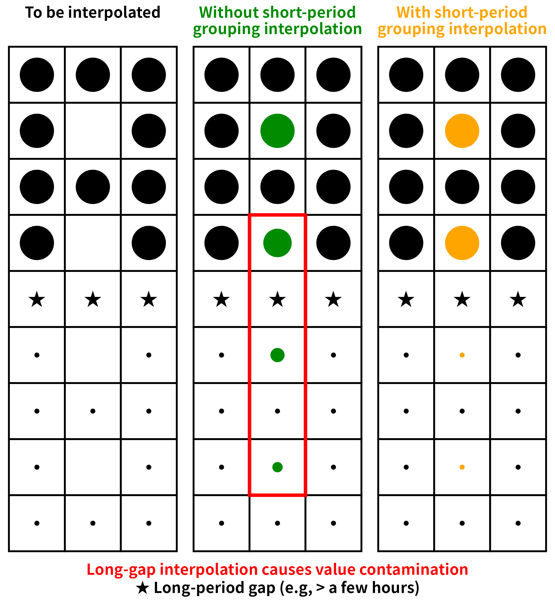

Efficient and flexible data preprocessing tools for R, with C++ / OpenMP / SIMD backends.
In one paragraph
dataprep provides an opinionated, high-performance pipeline for cleaning tabular and time-series data. The 0.1.7 release rewrites the cleaning routines in C++ and delivers a speedup over 0.1.5 that ranges from about 1.0× (for varidele on some full-year data) to about 1146× (for condextr on full-year Ubuntu data). The melt() and dcast() reshaping functions are benchmarked against every one of the seven major alternatives in the R and Python ecosystems, at every tested scale (from 1,000 to 100,000,000 rows), on two reference hosts; the resulting speed-up ranges are 0.5–1187× for melt() and 2.0–639× for dcast(). On both hosts the output is identical to reshape2, data.table, tidyr, pandas, polars, dask, and duckdb, within tol = 1e-12.
Why dataprep
dataprep provides a coherent, opinionated pipeline for preprocessing tabular and time-series data:
-
Variable deletion by missing-value fraction (
varidele). -
Observation deletion by consecutive missing runs (
obsedele). -
Outlier removal by point-by-point weighted conditional extremum (
condextr) or by percentile (percoutl). -
Missing-value imputation within short periods (
shorvalu) or by linear / LOCF / NOCB / mean / median (impute_missing). -
Fast reshaping between wide and long formats (
melt,dcast) with SIMD + OpenMP. - Descriptive statistics, diagnostics, transformation, standardization, encoding, validation, and reporting.
- Time-series tools: detrending, diurnal-cycle removal, rolling statistics, lags, resampling, decomposition, drift detection, day/night and season flags.
-
Fit / transform interfaces (
prep_fit,prep_transform) that prevent data leakage during preprocessing.
Most heavy routines are written in C++ with Rcpp. Since 0.1.7, many operations are parallelized with OpenMP and vectorized with AVX2 / AVX-512 when the hardware supports it.
Design philosophy
The cleaning pipeline is organised around four sequential steps, each addressing a distinct failure mode of high-resolution environmental data:

Variable deletion. Drop size bins whose missing fraction exceeds a threshold, so downstream interpolation never has to extrapolate from far-away anchors.
Observation deletion. Drop rows whose selected columns contain a consecutive missing run longer than
halfminutes on both sides. Every remaining point then has a trustworthy anchor withinhalfminutes.-
Conditional extremum outlier removal. A single value can be a global maximum and still be legitimate, or vice versa.
condextr()judges each candidate in context.
-
Short-period grouping interpolation. After steps 1–3, remaining
NAs sit inside short gaps with a valid anchor withinhalfminutes.shorvalu()interpolates within each short segment only.
Interpolating across a long gap silently mixes two physically distinct regimes and can create new outliers at the segment boundary. Grouping by short segments keeps the interpolation local.
Steps 1–3 are wrapped by dataprep() for one-call use. The design reasoning is documented in full in vignette("dataprep-philosophy"). data1 in this package is the already-aggregated seven-column version of the same dataset; it is not a useful input for the cleaning pipeline.
Installation
# from GitHub
# install.packages("remotes")
remotes::install_github("chunshengliang/dataprep")The package requires a C++17 compiler (Rtools on Windows, Xcode / clang on macOS, gcc on Linux).
Quick start
library(dataprep)
# The size-bin columns are the ones whose names are numeric
# (1.00, 1.12, ..., 1000). The four non-size columns
# (`date`, `tconc`, `TPNC`, `monthyear`) are excluded by this
# pattern.
size_bins <- grep("^[-+]?[0-9]*\\.?[0-9]+$", names(data))
cleaned <- dataprep(
data,
cols = size_bins,
group = 4, # monthyear
interval = 10,
times = 10,
intervals = 30
)
dim(cleaned)Performance
melt() and dcast() are benchmarked against all 7 major alternatives across 10 shapes and 6 scales (1,000 to 100,000,000 rows). Every cell is measured with microbenchmark using an adaptive times rule. Two reference hosts were used.
Reference host A — Ubuntu 25.10
| Component | Value |
|---|---|
| OS | Ubuntu 25.10 (Questing Quokka), kernel 6.17.0-41-generic |
| CPU | 2× AMD EPYC 9965 192-Core Processor (Turin, Zen 5c) |
| Physical cores | 384 (2 × 192) |
| Logical cores | 768 (SMT-2) |
| L1d / L1i | 18 MiB / 12 MiB |
| L2 | 384 MiB |
| L3 | 768 MiB |
| NUMA nodes | 2 |
| RAM | 1.0 TiB (16 × 64 GiB Micron, DDR5-5600, Multi-bit ECC) |
| Max frequency | 3.70 GHz |
| AVX-512 | Full (f, dq, ifma, cd, bw, vl, vbmi, vbmi2, vnni, bitalg, vpopcntdq, bf16) |
| R | 4.5.1 (2025-06-13) |
| Compiler | g++ 15.2.0 |
| reticulate | 1.47.0 |
| data.table | 1.18.6.1 |
| reshape2 | 1.4.5 |
| tidyr | 1.3.2 |
| Python | 3.13.7 |
| pandas | 3.0.6 |
| polars | 1.44.2 (runtime rt64) |
| dask | 2026.8.0 |
| duckdb | 1.5.5 |
Reference host B — Windows 11 Pro for Workstations
| Component | Value |
|---|---|
| OS | Windows 11 Pro for Workstations, 10.0.26100, Build 26100 |
| CPU | 2× AMD EPYC 7B12 64-Core Processor |
| Physical cores | 128 (2 × 64) |
| Logical cores | 128 (no SMT) |
| L1d / L1i | 4 MiB / 4 MiB |
| L2 | 64 MiB |
| L3 | 512 MiB |
| NUMA nodes | 2 |
| RAM | about 224 GiB (7 × 32 GiB, 2933 MT/s, Micron / Samsung, non-ECC) |
| Max frequency | 2.25 GHz |
| AVX | AVX, AVX2 (no AVX-512) |
| R | 4.6.1 (2026-06-24 ucrt) |
| Compiler | GCC 14.3.0 |
| reticulate | 1.47.0 |
| data.table | 1.18.6.1 |
| reshape2 | 1.4.5 |
| tidyr | 1.3.2 |
| Python | 3.13.15 |
| pandas | 3.0.6 |
| polars | 1.44.2 (runtime rt64) |
| dask | 2026.8.0 |
| duckdb | 1.5.5 |
The two hosts differ in core count, cache size and memory bandwidth. The relative ranking of the engines is identical on both; the absolute multipliers scale with the hardware. On a typical 8–16-core workstation the same comparisons remain within 10–100×.
All numbers below are medians in milliseconds. Each cell is written as time (speedup×), where time is the median for that engine and speedup× is time / dataprep_time. The dataprep column itself is the baseline, so it has no multiplier.
melt() — Ubuntu 25.10
Vary rows, 1 id + 9 value columns
| rows | dataprep | reshape2 | data.table | tidyr | pandas | polars | dask | duckdb |
|---|---|---|---|---|---|---|---|---|
| 1e3 | 0.176 | 0.373 (2.1×) | 0.272 (1.5×) | 3.009 (17.1×) | 2.162 (12.3×) | 0.612 (3.5×) | 15.61 (88.6×) | 4.714 (26.8×) |
| 1e4 | 0.235 | 0.436 (1.9×) | 0.341 (1.5×) | 3.379 (14.4×) | 2.517 (10.7×) | 0.685 (2.9×) | 15.59 (66.4×) | 11.00 (46.9×) |
| 1e5 | 1.588 | 1.138 (0.7×) | 1.018 (0.6×) | 8.230 (5.2×) | 6.660 (4.2×) | 1.557 (1.0×) | 17.99 (11.3×) | 68.79 (43.3×) |
| 1e6 | 3.680 | 17.89 (4.9×) | 7.900 (2.1×) | 76.77 (20.9×) | 60.30 (16.4×) | 10.44 (2.8×) | 46.49 (12.6×) | 642.1 (174×) |
| 1e7 | 37.95 | 372.7 (9.8×) | 371.6 (9.8×) | 1111 (29.3×) | 720.1 (19.0×) | 92.53 (2.4×) | 486.4 (12.8×) | 6423 (169×) |
| 1e8 | 496.4 | 3577 (7.2×) | 3576 (7.2×) | 12089 (24.4×) | 7410 (14.9×) | 2563 (5.2×) | 4590 (9.2×) | 65624 (132×) |
Vary rows, 10 id (5 int + 5 chr)
| rows | dataprep | reshape2 | data.table | tidyr | pandas | polars | dask | duckdb |
|---|---|---|---|---|---|---|---|---|
| 1e3 | 0.231 | 0.540 (2.3×) | 0.422 (1.8×) | 3.123 (13.5×) | 5.626 (24.4×) | 0.954 (4.1×) | 53.07 (230×) | 10.64 (46.1×) |
| 1e4 | 0.475 | 1.984 (4.2×) | 1.760 (3.7×) | 4.941 (10.4×) | 6.090 (12.8×) | 1.889 (4.0×) | 54.21 (114×) | 50.11 (106×) |
| 1e5 | 3.752 | 16.74 (4.5×) | 14.90 (4.0×) | 23.06 (6.1×) | 13.12 (3.5×) | 3.944 (1.1×) | 57.69 (15.4×) | 469.6 (125×) |
| 1e6 | 21.28 | 206.2 (9.7×) | 153.7 (7.2×) | 219.9 (10.3×) | 90.42 (4.2×) | 37.50 (1.8×) | 106.8 (5.0×) | 4666 (219×) |
| 1e7 | 868.6 | 3168 (3.6×) | 2703 (3.1×) | 3731 (4.3×) | 1357 (1.6×) | 562.3 (0.6×) | 928.2 (1.1×) | 48519 (55.9×) |
Vary value columns, 1e3 rows, 1 id
| n_val | dataprep | reshape2 | data.table | tidyr | pandas | polars | dask | duckdb |
|---|---|---|---|---|---|---|---|---|
| 10 | 0.174 | 0.373 (2.1×) | 0.267 (1.5×) | 2.956 (17.0×) | 2.143 (12.3×) | 0.608 (3.5×) | 16.65 (95.6×) | 4.853 (27.9×) |
| 100 | 0.260 | 1.081 (4.2×) | 0.381 (1.5×) | 3.779 (14.5×) | 6.458 (24.8×) | 0.726 (2.8×) | 50.90 (196×) | 21.25 (81.7×) |
| 1000 | 0.973 | 8.141 (8.4×) | 1.350 (1.4×) | 12.26 (12.6×) | 48.29 (49.6×) | 3.535 (3.6×) | 370.9 (381×) | 174.1 (179×) |
| 10000 | 3.616 | 92.45 (25.6×) | 9.659 (2.7×) | 107.7 (29.8×) | 499.0 (138×) | 16.31 (4.5×) | 4292 (1187×) | 1914 (529×) |
Vary value columns, 1e3 rows, 10 id
| n_val | dataprep | reshape2 | data.table | tidyr | pandas | polars | dask | duckdb |
|---|---|---|---|---|---|---|---|---|
| 10 | 0.247 | 0.613 (2.5×) | 0.459 (1.9×) | 3.114 (12.6×) | 5.655 (22.9×) | 0.915 (3.7×) | 53.18 (216×) | 12.06 (48.9×) |
| 100 | 0.529 | 2.783 (5.3×) | 1.964 (3.7×) | 5.513 (10.4×) | 20.76 (39.2×) | 2.051 (3.9×) | 186.4 (352×) | 59.88 (113×) |
| 1000 | 4.304 | 25.15 (5.8×) | 16.73 (3.9×) | 28.76 (6.7×) | 168.6 (39.2×) | 6.207 (1.4×) | 1614 (375×) | 566.6 (132×) |
| 10000 | 25.22 | 313.6 (12.4×) | 169.0 (6.7×) | 281.7 (11.2×) | 1793 (71.1×) | 59.36 (2.4×) | 22456 (891×) | 5792 (230×) |
melt() — Windows 11 Pro for Workstations
Vary rows, 1 id + 9 value columns
| rows | dataprep | reshape2 | data.table | tidyr | pandas | polars | dask | duckdb |
|---|---|---|---|---|---|---|---|---|
| 1e3 | 0.319 | 0.653 (2.0×) | 0.512 (1.6×) | 4.224 (13.2×) | 3.575 (11.2×) | 0.513 (1.6×) | 28.55 (89.5×) | 7.724 (24.2×) |
| 1e4 | 0.533 | 0.938 (1.8×) | 0.780 (1.5×) | 5.208 (9.8×) | 5.369 (10.1×) | 0.795 (1.5×) | 29.60 (55.6×) | 22.33 (41.9×) |
| 1e5 | 3.964 | 3.485 (0.9×) | 3.131 (0.8×) | 16.43 (4.1×) | 24.99 (6.3×) | 2.692 (0.7×) | 44.12 (11.1×) | 175.9 (44.4×) |
| 1e6 | 12.15 | 24.44 (2.0×) | 26.17 (2.2×) | 174.4 (14.3×) | 210.6 (17.3×) | 17.99 (1.5×) | 178.8 (14.7×) | 1558 (128×) |
| 1e7 | 101.4 | 262.2 (2.6×) | 253.3 (2.5×) | 1510 (14.9×) | 1908 (18.8×) | 177.5 (1.8×) | 1541 (15.2×) | 14588 (144×) |
| 1e8 | 1197 | 3514 (2.9×) | 2806 (2.3×) | 21106 (17.6×) | 22968 (19.2×) | 5227 (4.4×) | 16904 (14.1×) | 160256 (134×) |
Vary rows, 10 id (5 int + 5 chr)
| rows | dataprep | reshape2 | data.table | tidyr | pandas | polars | dask | duckdb |
|---|---|---|---|---|---|---|---|---|
| 1e3 | 0.520 | 1.237 (2.4×) | 0.903 (1.7×) | 4.754 (9.1×) | 12.98 (24.9×) | 1.227 (2.4×) | 99.55 (191×) | 22.59 (43.4×) |
| 1e4 | 1.564 | 5.179 (3.3×) | 3.733 (2.4×) | 8.992 (5.8×) | 16.17 (10.3×) | 1.966 (1.3×) | 104.0 (66.5×) | 105.3 (67.3×) |
| 1e5 | 14.15 | 43.11 (3.0×) | 31.50 (2.2×) | 47.48 (3.4×) | 48.34 (3.4×) | 7.501 (0.5×) | 133.2 (9.4×) | 1133 (80.1×) |
| 1e6 | 96.20 | 435.8 (4.5×) | 270.6 (2.8×) | 491.2 (5.1×) | 348.7 (3.6×) | 84.98 (0.9×) | 366.6 (3.8×) | 10123 (105×) |
| 1e7 | 922.5 | 4062 (4.4×) | 2819 (3.1×) | 5023 (5.4×) | 3324 (3.6×) | 961.4 (1.0×) | 2745 (3.0×) | 104826 (114×) |
Vary value columns, 1e3 rows, 1 id
| n_val | dataprep | reshape2 | data.table | tidyr | pandas | polars | dask | duckdb |
|---|---|---|---|---|---|---|---|---|
| 10 | 0.417 | 0.830 (2.0×) | 0.627 (1.5×) | 4.396 (10.6×) | 3.916 (9.4×) | 0.527 (1.3×) | 28.96 (69.5×) | 10.08 (24.2×) |
| 100 | 0.813 | 2.521 (3.1×) | 1.082 (1.3×) | 6.579 (8.1×) | 16.19 (19.9×) | 0.768 (0.9×) | 113.8 (140×) | 54.63 (67.2×) |
| 1000 | 3.854 | 15.89 (4.1×) | 3.901 (1.0×) | 26.12 (6.8×) | 164.0 (42.6×) | 3.787 (1.0×) | 972.9 (252×) | 479.3 (124×) |
| 10000 | 11.58 | 158.7 (13.7×) | 34.86 (3.0×) | 224.1 (19.4×) | 1647 (142×) | 30.51 (2.6×) | 10220 (883×) | 5518 (477×) |
Vary value columns, 1e3 rows, 10 id
| n_val | dataprep | reshape2 | data.table | tidyr | pandas | polars | dask | duckdb |
|---|---|---|---|---|---|---|---|---|
| 10 | 0.540 | 1.296 (2.4×) | 0.938 (1.7×) | 5.014 (9.3×) | 13.66 (25.3×) | 1.170 (2.2×) | 104.4 (193×) | 24.26 (44.9×) |
| 100 | 1.701 | 6.831 (4.0×) | 3.996 (2.3×) | 9.709 (5.7×) | 64.26 (37.8×) | 2.706 (1.6×) | 508.6 (299×) | 130.6 (76.8×) |
| 1000 | 16.65 | 55.66 (3.3×) | 33.08 (2.0×) | 62.23 (3.7×) | 605.7 (36.4×) | 11.70 (0.7×) | 4810 (289×) | 1382 (83.0×) |
| 10000 | 101.7 | 604.5 (5.9×) | 347.7 (3.4×) | 559.2 (5.5×) | 5875 (57.8×) | 108.0 (1.1×) | 52155 (513×) | 14011 (138×) |
dcast() — Ubuntu 25.10
Vary n_long, 1 id, 10 levels
| n_long | dataprep | reshape2 | data.table | tidyr | pandas | polars | dask | duckdb |
|---|---|---|---|---|---|---|---|---|
| 1e3 | 0.859 | 1.689 (2.0×) | 1.818 (2.1×) | 4.349 (5.1×) | 1.889 (2.2×) | 30.04 (35.0×) | 8.351 (9.7×) | 7.584 (8.8×) |
| 1e4 | 0.874 | 2.649 (3.0×) | 2.578 (3.0×) | 4.630 (5.3×) | 2.352 (2.7×) | 38.20 (43.7×) | 9.035 (10.3×) | 10.51 (12.0×) |
| 1e5 | 1.014 | 19.86 (19.6×) | 14.74 (14.5×) | 7.969 (7.9×) | 7.115 (7.0×) | 51.95 (51.2×) | 15.03 (14.8×) | 33.84 (33.4×) |
| 1e6 | 1.632 | 151.3 (92.7×) | 345.4 (212×) | 46.67 (28.6×) | 58.85 (36.1×) | 105.8 (64.8×) | 80.65 (49.4×) | 158.7 (97.3×) |
| 1e7 | 8.417 | 1888 (224×) | 557.6 (66.2×) | 740.2 (87.9×) | 808.2 (96.0×) | 307.8 (36.6×) | 968.7 (115×) | 1756 (209×) |
| 1e8 | 100.4 | 21075 (210×) | 17434 (174×) | 9711 (96.7×) | 10758 (107×) | 2429 (24.2×) | 12982 (129×) | 17061 (170×) |
Vary levels, 1 id, 1e6 rows
| levels | dataprep | reshape2 | data.table | tidyr | pandas | polars | dask | duckdb |
|---|---|---|---|---|---|---|---|---|
| 10 | 1.632 | 151.3 (92.7×) | 345.4 (212×) | 46.67 (28.6×) | 58.85 (36.1×) | 105.8 (64.8×) | 80.65 (49.4×) | 158.7 (97.3×) |
| 100 | 1.451 | 108.7 (74.9×) | 335.9 (232×) | 43.25 (29.8×) | 56.27 (38.8×) | 172.6 (119×) | 77.04 (53.1×) | 180.9 (125×) |
| 1000 | 1.966 | 106.8 (54.3×) | 183.9 (93.5×) | 44.37 (22.6×) | 57.64 (29.3×) | 208.4 (106×) | 79.51 (40.4×) | 200.5 (102×) |
Vary n_long, 1 id, 100 levels
| n_long | dataprep | reshape2 | data.table | tidyr | pandas | polars | dask | duckdb |
|---|---|---|---|---|---|---|---|---|
| 1e4 | 1.011 | 2.885 (2.9×) | 2.926 (2.9×) | 4.851 (4.8×) | 2.487 (2.5×) | 37.85 (37.4×) | 9.310 (9.2×) | 15.28 (15.1×) |
| 1e5 | 1.144 | 18.12 (15.8×) | 8.935 (7.8×) | 8.016 (7.0×) | 7.015 (6.1×) | 55.99 (48.9×) | 14.78 (12.9×) | 41.93 (36.7×) |
| 1e6 | 1.393 | 108.9 (78.2×) | 320.7 (230×) | 43.53 (31.3×) | 56.04 (40.2×) | 160.4 (115×) | 77.95 (56.0×) | 175.7 (126×) |
| 1e7 | 4.733 | 2084 (440×) | 550.9 (116×) | 633.0 (134×) | 768.4 (162×) | 458.8 (96.9×) | 953.6 (202×) | 1717 (363×) |
| 1e8 | 43.91 | 17115 (390×) | 16193 (369×) | 8174 (186×) | 9880 (225×) | 2467 (56.2×) | 12217 (278×) | 17895 (408×) |
Vary n_id, 1e6 rows, 10 levels
| n_id | dataprep | reshape2 | data.table | tidyr | pandas | polars | dask | duckdb |
|---|---|---|---|---|---|---|---|---|
| 1 | 1.632 | 151.3 (92.7×) | 345.4 (212×) | 46.67 (28.6×) | 58.85 (36.1×) | 105.8 (64.8×) | 80.65 (49.4×) | 158.7 (97.3×) |
| 2 | 2.268 | 206.9 (91.2×) | 375.0 (165×) | 61.10 (26.9×) | 83.84 (37.0×) | 111.2 (49.0×) | 112.3 (49.5×) | 308.8 (136×) |
| 10 | 3.457 | 1230 (356×) | 437.7 (127×) | 94.13 (27.2×) | 192.9 (55.8×) | 119.6 (34.6×) | 242.3 (70.1×) | 927.6 (268×) |
| 100 | 20.14 | 10242 (509×) | 542.0 (26.9×) | 413.4 (20.5×) | 1332 (66.2×) | 158.3 (7.9×) | 1644 (81.6×) | 8344 (414×) |
dcast() — Windows 11 Pro for Workstations
Vary n_long, 1 id, 10 levels
| n_long | dataprep | reshape2 | data.table | tidyr | pandas | polars | dask | duckdb |
|---|---|---|---|---|---|---|---|---|
| 1e3 | 0.440 | 2.518 (5.7×) | 4.337 (9.9×) | 7.095 (16.1×) | 2.511 (5.7×) | 5.061 (11.5×) | 15.16 (34.5×) | 21.24 (48.3×) |
| 1e4 | 0.520 | 4.744 (9.1×) | 8.552 (16.4×) | 8.481 (16.3×) | 5.161 (9.9×) | 5.919 (11.4×) | 18.12 (34.8×) | 25.88 (49.7×) |
| 1e5 | 1.226 | 35.49 (28.9×) | 43.96 (35.9×) | 16.07 (13.1×) | 24.02 (19.6×) | 12.94 (10.6×) | 41.88 (34.2×) | 73.57 (60.0×) |
| 1e6 | 3.940 | 305.7 (77.6×) | 155.1 (39.4×) | 98.29 (24.9×) | 269.7 (68.4×) | 49.29 (12.5×) | 359.8 (91.3×) | 399.8 (101×) |
| 1e7 | 24.34 | 2821 (116×) | 1035 (42.5×) | 1509 (62.0×) | 2718 (112×) | 506.2 (20.8×) | 3639 (150×) | 3775 (155×) |
| 1e8 | 208.9 | 29019 (139×) | 12640 (60.5×) | 15943 (76.3×) | 32102 (154×) | 5021 (24.0×) | 38770 (186×) | 34355 (165×) |
Vary levels, 1 id, 1e6 rows
| levels | dataprep | reshape2 | data.table | tidyr | pandas | polars | dask | duckdb |
|---|---|---|---|---|---|---|---|---|
| 10 | 3.940 | 305.7 (77.6×) | 155.1 (39.4×) | 98.29 (24.9×) | 269.7 (68.4×) | 49.29 (12.5×) | 359.8 (91.3×) | 399.8 (101×) |
| 100 | 4.085 | 191.6 (46.9×) | 177.9 (43.6×) | 82.31 (20.2×) | 226.0 (55.3×) | 69.16 (16.9×) | 341.5 (83.6×) | 800.1 (196×) |
| 1000 | 5.419 | 207.6 (38.3×) | 164.9 (30.4×) | 92.65 (17.1×) | 262.5 (48.4×) | 245.3 (45.3×) | 314.5 (58.0×) | 1152 (213×) |
Vary n_long, 1 id, 100 levels
| n_long | dataprep | reshape2 | data.table | tidyr | pandas | polars | dask | duckdb |
|---|---|---|---|---|---|---|---|---|
| 1e4 | 0.522 | 5.219 (10.0×) | 8.750 (16.8×) | 8.277 (15.8×) | 5.532 (10.6×) | 10.13 (19.4×) | 18.98 (36.3×) | 81.00 (155×) |
| 1e5 | 0.858 | 33.76 (39.4×) | 38.64 (45.0×) | 16.90 (19.7×) | 27.31 (31.8×) | 14.34 (16.7×) | 41.56 (48.4×) | 268.4 (313×) |
| 1e6 | 3.886 | 188.5 (48.5×) | 160.5 (41.3×) | 93.87 (24.2×) | 255.4 (65.7×) | 67.64 (17.4×) | 303.7 (78.1×) | 781.5 (201×) |
| 1e7 | 21.21 | 3253 (153×) | 1010 (47.6×) | 1332 (62.8×) | 2420 (114×) | 1125 (53.0×) | 3061 (144×) | 5562 (262×) |
| 1e8 | 106.3 | 24253 (228×) | 14965 (141×) | 13392 (126×) | 26311 (248×) | 7646 (71.9×) | 32874 (309×) | 67894 (639×) |
Vary n_id, 1e6 rows, 10 levels
| n_id | dataprep | reshape2 | data.table | tidyr | pandas | polars | dask | duckdb |
|---|---|---|---|---|---|---|---|---|
| 1 | 3.940 | 305.7 (77.6×) | 155.1 (39.4×) | 98.29 (24.9×) | 269.7 (68.4×) | 49.29 (12.5×) | 359.8 (91.3×) | 399.8 (101×) |
| 2 | 6.120 | 390.9 (63.9×) | 178.8 (29.2×) | 111.1 (18.1×) | 329.8 (53.9×) | 68.54 (11.2×) | 482.6 (78.9×) | 645.0 (105×) |
| 10 | 11.59 | 2862 (247×) | 251.9 (21.7×) | 175.1 (15.1×) | 802.2 (69.2×) | 77.98 (6.7×) | 1076 (92.9×) | 1941 (168×) |
| 100 | 54.19 | 24145 (446×) | 1011 (18.7×) | 739.2 (13.6×) | 5954 (110×) | 241.6 (4.5×) | 7386 (136×) | 16429 (303×) |
Summary of speedups
Speedup is defined as competitor median / dataprep median. Each table summarises every benchmark cell on that host, across all seven competitors (reshape2, data.table, tidyr, pandas, polars, dask, duckdb). Cell labels are written as n_rows × n_cols × n_id × n_val for melt() and n_long × n_id × n_levels for dcast().
Ubuntu 25.10
| Operation | Min | Median | Mean | Max |
|---|---|---|---|---|
melt() |
0.6× (data.table @ 1e5 × 10 × 1 × 9) | 10.3× | 58.5× | 1187.1× (dask @ 1e3 × 10001 × 1 × 10000) |
dcast() |
2.0× (reshape2 @ 1e3 × 1 × 10) | 49.7× | 94.7× | 508.6× (reshape2 @ 1e6 × 100 × 10) |
Windows 11 Pro for Workstations
| Operation | Min | Median | Mean | Max |
|---|---|---|---|---|
melt() |
0.5× (polars @ 1e5 × 19 × 10 × 9) | 5.7× | 44.2× | 882.6× (dask @ 1e3 × 10001 × 1 × 10000) |
dcast() |
4.5× (polars @ 1e6 × 100 × 10) | 47.7× | 81.6× | 638.8× (duckdb @ 1e8 × 1 × 100) |
Combined across both hosts, the smallest speedups remain at 0.5–0.6× (melt() at 1e5 rows), while the largest reach 1187× for melt() and 639× for dcast(). The mean speedup is above 44× for melt() and above 81× for dcast() on both hosts. On the largest cells (1e8 rows, 8 GB of input), dataprep is the only engine that completes within 2 s, specifically < 0.5 s on Ubuntu and < 1.3 s on Windows.
Complete tables — including mean, median, and the full per-competitor gradient — are in vignette("dataprep-performance").
Cross-engine consistency
melt() and dcast() produce output identical to reshape2, data.table, tidyr, pandas, polars, dask, and duckdb on every tested shape, within tol = 1e-12:
| Operation | Cells tested | Engines | Pairwise |
|---|---|---|---|
melt |
4 shapes | 8 | all consistent |
dcast |
4 shapes | 8 | all consistent |
Reproducible scripts ship under inst/ and are disabled by default so that R CMD check does not run them. A single script, benchmark_melt_dcast.R, runs both the per-tool benchmarks and the 8-engine consistency checks:
Sys.setenv(DATAPREP_RUN_BENCHMARK = "1")
source(system.file("benchmark_melt_dcast.R", package = "dataprep"))When not to preprocess
The pipeline above assumes that the input is high-resolution instrument data with intermittent gaps and occasional outliers. Three cases where you should not run the full pipeline:
-
Already-aggregated data.
data1in this package is the result of aggregating the 61 size bins ofdatainto three modes. It has no long gaps and no obvious outliers, sovaridele,obsedele,condextr, andshorvaluhave nothing to do. -
Models that tolerate missing values. Gradient boosting, random forests, and XGBoost handle
NAnatively. - Gaps shorter than the physical mixing time. When the aerosol is well-mixed, a few missing points can be interpolated with negligible error.
See vignette("dataprep-philosophy") for the full reasoning.
Function overview
Cleaning
-
varidele()— remove variables by missing fraction -
obsedele()— remove observations by consecutive missing runs -
condextr()— point-by-point weighted conditional extremum -
percoutl()— traditional percentile removal -
detect_outliers()— IQR / MAD / percentile masks -
winsorize()— cap extreme values -
phys_filter()— physical range filter -
filter_high_cor()/filter_low_var()— variable selection -
deduplicate()— exact / fuzzy duplicate removal -
validate_data()— rule-based validation -
balance_panel()— panel balancing
Missing values and imputation
-
na_diagnose()— NA run statistics -
impute_missing()— linear / LOCF / NOCB / mean / median -
shorvalu()— short-period linear interpolation
Transformation
-
transform_data()— log / sqrt / Box-Cox / Yeo-Johnson, z-score / min-max / robust -
log_returns()— log returns -
bin_data()— equal-width / equal-frequency / custom binning -
encode_categorical()— label / frequency / one-hot
Time series
-
create_lags()— grouped lag / lead columns -
roll_apply()— rolling statistics -
resample_time()— resample to hour / day / month -
detrend_ts()— linear detrending -
remove_diurnal_cycle()— subtract mean diurnal cycle -
decompose_ts()— additive / multiplicative decomposition -
drift_detect()— rolling drift detection -
day_night_flag()/season_flag()— time flags
Workflow and reporting
-
descdata()/descplot()— descriptive statistics -
percdata()/percplot()— percentile summaries -
data_report()— compact data quality report -
dry_run()— simulate preprocessing -
prep_fit()/prep_transform()— fit / transform pipeline -
sample_data()— stratified sampling
Documentation
- Design philosophy and preprocessing methodology — why the pipeline has the shape it does.
-
Cleaning pipeline — step-by-step walkthrough of
varidele/obsedele/condextr/shorvalu. - Performance and cross-engine consistency — full benchmark tables and consistency checks.
- Upgrading from 0.1.5 to 0.1.7 — behaviour changes and migration checklist.
-
Leakage-free workflow —
prep_fit()/prep_transform(). -
Fast reshaping with
melt()anddcast(). - Descriptive statistics and plots.
- Function reference.
- Changelog.
Citation
If you use dataprep in published work, please cite:
Liang, C.-S., Wu, H., Li, H.-Y., Zhang, Q., Li, Z. & He, K.-B. (2020). Efficient data preprocessing, episode classification, and source apportionment of particle number concentrations. Science of the Total Environment, 741, 140923. https://doi.org/10.1016/j.scitotenv.2020.140923